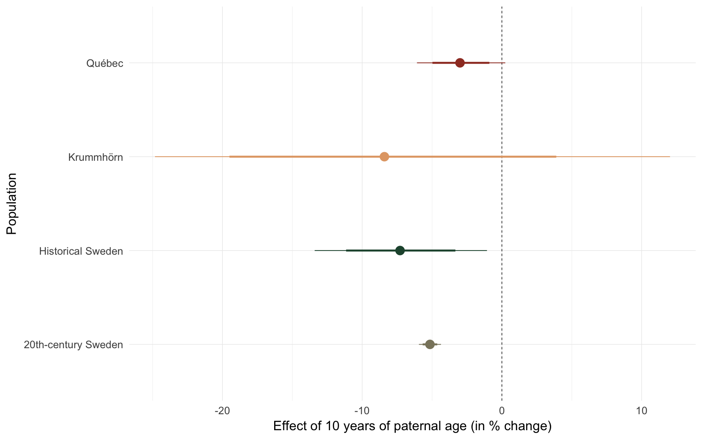

source("0__helpers.R")
opts_chunk$set(warning=FALSE, cache=F,cache.lazy=F,tidy=FALSE,autodep=TRUE,dev=c('png','pdf'), fig.width=17.8,fig.height = 17.8*0.625,out.width='1440px',out.height='900px')
get_paternalage_effect = function(model, population, var = "paternalage") {
brms::marginal_effects(readRDS(get_coefficient_path(model, population)), var)
}load('krmh.rdata')
load('swed1.rdata')
load('ddb.rdata')
load('rpqa.rdata')
populations = bind_rows(
"Krummhörn" = krmh.1 %>% filter(byear < 1835) %>% select(paternalage, children),
"Québec" = rpqa.1 %>% filter(byear < 1740) %>% select(paternalage, children),
"20th-century Sweden" = swed.1 %>% filter(byear < 1959) %>% select(paternalage, children),
"Historical Sweden" = ddb.1 %>% filter(byear < 1850) %>% select(paternalage, children),
.id = "Population"
)
rm(krmh, krmh.1, rpqa, rpqa.1, ddb, ddb.1, swed.1)
raw_plot = ggplot(populations, aes(x = paternalage*10, y = children, colour = Population, fill = Population)) +
geom_smooth(aes(group = Population),method = "gam", formula = y ~ s(x)) +
ggtitle("The reproductive success of older fathers' children - raw") +
scale_y_continuous("Number of anchor's children", limits = c(0,NA)) +
scale_x_continuous("Paternal age", breaks = c(20,30,40,50,60,70)) +
analysis_theme +
pop_colour + pop_fill +
annotate("text", label = "Québec", x = 30, y = 4.2, size = 8, colour = colour_values["Québec"], hjust = 0) +
annotate("text", label = "20th-century Sweden", x = 20, y = 1.9, size = 8, colour = colour_values["20th-century Sweden"], hjust = 0) +
annotate("text", label = "Historical Sweden", x = 30, y = 1.5, size = 8, colour = colour_values["Historical Sweden"], hjust = 0) +
annotate("text", label = "Krummhörn", x = 30, y = 2, size = 8, colour = colour_values["Krummhörn"], hjust = 0) +
theme(legend.position = c(-1,0),
legend.justification = c(0,0))
raw_plotrm(populations)model_name = "m1_children_linear_noranef"
m1 = bind_rows(
"Krummhörn" = get_paternalage_effect(model_name, "krmh"),
"Québec" = get_paternalage_effect(model_name, "rpqa"),
"20th-century Sweden" = get_paternalage_effect(model_name, "swed"),
"Historical Sweden" = get_paternalage_effect(model_name, "ddb"),
.id = "Population"
) %>% mutate(Population = str_sub(Population,1, -13))
m1_plot = ggplot(m1, aes(x = paternalage*10, y = Estimate, colour = Population, fill = Population, ymin = lowerCI, ymax = upperCI)) +
geom_smooth(stat = 'identity', position = position_identity()) +
# geom_smooth(aes(colour = Population, weight = 1/Est.Error ,group = Population),method = "lm", se = F, lty = "dashed", position = position_identity()) +
ggtitle("The reproductive success of older fathers' children - m1") +
scale_y_continuous("Number of anchor's children", limits = c(0,NA)) +
scale_x_continuous("Paternal age", breaks = c(20,30,40,50,60,70)) +
analysis_theme +
pop_colour + pop_fill +
annotate("text", label = "Québec", x = 30, y = 6.2, size = 8, colour = colour_values["Québec"], hjust = 0) +
annotate("text", label = "20th-century Sweden", x = 30, y = 1.7, size = 8, colour = colour_values["20th-century Sweden"], hjust = 0) +
annotate("text", label = "Historical Sweden", x = 30, y = 3, size = 8, colour = colour_values["Historical Sweden"], hjust = 0) +
annotate("text", label = "Krummhörn", x = 72, y = 2, size = 8, colour = colour_values["Krummhörn"], hjust = 0) +
theme(legend.position = c(-1,0),
legend.justification = c(0,0))
m1_plotcomp_plot(model_name)## Population median_estimate ci_95 ci_80
## 1 Krummhörn -4.87 [-9.82;0.17] [-8.12;-1.57]
## 2 Québec -1.57 [-2.51;-0.59] [-2.17;-0.9]
## 3 20th-century Sweden -4.60 [-4.83;-4.36] [-4.75;-4.44]
## 4 Historical Sweden 2.37 [0.69;4.08] [1.27;3.49]model_name = "m3_children_linear"
m3 = bind_rows(
"Krummhörn" = get_paternalage_effect(model_name, "krmh"),
"Québec" = get_paternalage_effect(model_name, "rpqa"),
"20th-century Sweden" = get_paternalage_effect(model_name, "swed"),
"Historical Sweden" = get_paternalage_effect(model_name, "ddb"),
.id = "Population"
) %>% mutate(Population = str_sub(Population,1, -13))
m3_plot = ggplot(m3, aes(x = paternalage*10, y = Estimate, colour = Population, fill = Population, ymin = lowerCI, ymax = upperCI)) +
geom_smooth(stat = 'identity', position = position_identity()) +
# geom_smooth(aes(colour = Population, weight = 1/Est.Error ,group = Population),method = "lm", se = F, lty = "dashed", position = position_identity()) +
ggtitle("The reproductive success of older fathers' children - m3") +
scale_y_continuous("Number of anchor's children", limits = c(0,NA)) +
scale_x_continuous("Paternal age", breaks = c(20,30,40,50,60,70)) +
analysis_theme +
pop_colour + pop_fill +
annotate("text", label = "Québec", x = 30, y = 5, size = 8, colour = colour_values["Québec"], hjust = 0) +
annotate("text", label = "20th-century Sweden", x = 15, y = 1.6, size = 8, colour = colour_values["20th-century Sweden"], hjust = 0) +
annotate("text", label = "Historical Sweden", x = 28, y = 3, size = 8, colour = colour_values["Historical Sweden"], hjust = 0) +
annotate("text", label = "Krummhörn", x = 55, y = 0.5, size = 8, colour = colour_values["Krummhörn"], hjust = 0) +
theme(legend.position = c(-1,0),
legend.justification = c(0,0))
m3_plotcomp_plot(model_name)
## Population median_estimate ci_95 ci_80
## 1 Krummhörn -8.41 [-24.83;12.03] [-19.5;3.89]
## 2 Québec -3.00 [-6.08;0.24] [-4.97;-0.9]
## 3 20th-century Sweden -3.41 [-5.88;-0.91] [-5.03;-1.73]
## 4 Historical Sweden -7.29 [-13.4;-1.07] [-11.15;-3.33]Here, we test whether the paternal age effect is roughly linear by fitting a thin-plate spline.
model_name = "m4_children_nonlinear"
m4 = bind_rows(
"Krummhörn" = get_paternalage_effect(model_name, "krmh"),
"Québec" = get_paternalage_effect(model_name, "rpqa"),
"20th-century Sweden" = get_paternalage_effect(model_name, "swed"),
"Historical Sweden" = get_paternalage_effect(model_name, "ddb"),
.id = "Population"
) %>% mutate(Population = str_sub(Population,1, -13))
m4_plot = ggplot(m4, aes(x = paternalage*10, y = Estimate, colour = Population, fill = Population)) +
geom_line(stat = 'identity', position = position_identity()) +
geom_smooth(aes(colour = Population, weight = 1/Est.Error, group = Population),method = "lm", se = F, lty = "dashed", position = position_identity()) +
ggtitle("The reproductive success of older fathers' children - m4") +
scale_y_continuous("Number of anchor's children", limits = c(0,NA)) +
xlab("Paternal age") +
analysis_theme +
pop_colour + pop_fill +
annotate("text", label = "Québec", x = 30, y = 5.2, size = 8, colour = colour_values["Québec"], hjust = 0) +
annotate("text", label = "20th-century Sweden", x = 23, y = 1.6, size = 8, colour = colour_values["20th-century Sweden"], hjust = 0) +
annotate("text", label = "Historical Sweden", x = 25, y = 2.7, size = 8, colour = colour_values["Historical Sweden"], hjust = 0) +
annotate("text", label = "Krummhörn", x = 50, y = 1.3, size = 8, colour = colour_values["Krummhörn"], hjust = 0) + theme(legend.position = c(-1,0),
legend.justification = c(0,0))
m4_plotCompares children of 25 year-old fathers with those of 35-year-old fathers.
comp_plot(model_name)## Population median_estimate ci_95 ci_80
## 1 Krummhörn -14.50 [-47.21;29.59] [-36.58;9.03]
## 2 Québec -4.67 [-14.36;8.45] [-11.01;2.87]
## 3 20th-century Sweden -6.88 [-7.71;-6.05] [-7.43;-6.35]
## 4 Historical Sweden -13.95 [-35.52;5.5] [-26.86;-2.12]